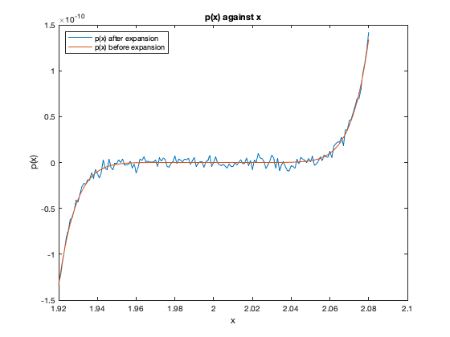

clear all;
close all;
p = @(x) (x - 2).^9;
x = [1.920:0.001:2.080]';
coef = [1 -2]; p1 = coef;
for i =1:8
p1 = conv(p1,coef);
end
p1;
P = polyval(p1,x);
plot(x,P);
hold on
xlabel('x'); ylabel('p(x)');
plot(x,p(x));
xlabel('x'); ylabel('p(x)');
legend('p(x) after expansion','p(x) before expansion','Location','northwest');
title('p(x) against x');
fprintf('According to the graph, its very bad to expand a polynomial, and evaluate it at different values of x, than evaluating it before expansion\n according to the noise displayed in the plot below for p(x) after expansion.\n');
According to the graph, its very bad to expand a polynomial, and evaluate it at different values of x, than evaluating it before expansion
according to the noise displayed in the plot below for p(x) after expansion.
